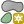

重要
翻訳は あなたが参加できる コミュニティの取り組みです。このページは現在 100.00% 翻訳されています。
15.2. レイヤを作成する
レイヤは下記も含め、さまざまな方法で作成することができます。
ゼロから空のレイヤを作成する
既存のレイヤからレイヤを作成する
クリップボードからレイヤを作成する
一つもしくは多数のレイヤに基づいたSQLライクなクエリの結果としてレイヤを作成する（ 仮想レイヤ を参照）
また、QGISは様々なフォーマットからインポートしたり、様々なフォーマットへエクスポートするためのツールも提供しています。
15.2.1. 新しいベクタレイヤを作成する
QGISでは、さまざまな形式で新しいレイヤを作成できます。QGISにはGeoPackage、シェープファイル、SpatiaLite、GPX形式、および一時スクラッチレイヤ（別名メモリレイヤ）を作成するためのツールがあります。 新規GRASSレイヤ の作成はGRASSプラグインでサポートされています。
15.2.1.1. 新しいGeoPackageレイヤを作成する
新しいGeoPackageレイヤを作成するには、 メニューもしくは データソースマネージャ ツールバーの  ボタンを押します。 図 15.22 に示すように、 新規GeoPackageレイヤ ダイアログが表示されます。
ボタンを押します。 図 15.22 に示すように、 新規GeoPackageレイヤ ダイアログが表示されます。
図 15.22 新規GeoPackageレイヤの作成ダイアログ
最初のステップは、データベースファイルの場所を指定することです。 データベース フィールドの右にある ... ボタンを押して、既存のGeoPackageファイルを選択するか、新しいGeoPackageファイルを作成します。QGISは、指定した名前に適切な拡張子を自動的に追加します。
新しいレイヤ / テーブルの名前を付けます（ テーブル名 ）
ジオメトリ型 を定義します。 ジオメトリなしのレイヤではない場合には、 Z次元を含む や M値を含む を指定できます。
 ボタンを使用し、座標参照系を指定します
ボタンを使用し、座標参照系を指定します
作成するレイヤにフィールドを追加するには、
フィールドの 名前 を入力します
データの 型 を選択します。サポートされているタイプは、 テキストデータ 、 整数値 （integer と integer64）、 小数点付き数値 、 日付 と 日付時間 、 バイナリ（BLOB） そして ブール値 です。
選択したデータ型にもよりますが、値の 最大長さ を入力します。
 属性リストに追加 ボタンをクリックします
属性リストに追加 ボタンをクリックします追加する必要のある各属性について、上記の手順を繰り返します
属性の設定に満足したら、 OK をクリックします。QGISが新しいレイヤを凡例に追加し、 既存レイヤのデジタイズ セクションで説明するように編集することができます。
デフォルトでは、GeoPackageレイヤを作成する際にQGISは fid という名前の 地物IDカラム を作成します。このカラムはレイヤの主キーとして機能します。この名前は変更することが可能です。ジオメトリフィールドがある場合には geometry という名前になり、これに対して 空間インデックスを作成する かを選択することができます。 これらのオプションは 高度なオプション の下にあり、この他に レイヤ識別子 （人間が読める短いレイヤ名）と レイヤの説明 フィールドがあります。
GeoPackageレイヤのさらなる管理は、 DBマネージャ で行うことができます。
15.2.1.2. 新しいシェープファイルレイヤを作成する
新しいESRIシェープファイル形式のレイヤを作成するには、 メニューもしくは データソースマネージャ ツールバーの ボタンを押します。 図 15.23 に示すように、 新規シェープファイルレイヤ ダイアログが表示されます。
{kind=link}
ファイル名 の隣にある ... ボタンを使用し、ファイルパスとファイル名を指定します。QGISは、指定した名前に適切な拡張子を自動的に追加します。
次に、データの ファイルエンコーディング を指定します
レイヤの ジオメトリ型 を選択します：ジオメトリなし（
.DBF形式ファイルのみ）、ポイント、マルチポイント、ライン、ポリゴンジオメトリが追加次元を持っているかを指定します： なし 、 Z値（＋M値） 、 M値
- ボタンを使用し、座標参照系を指定します

図 15.23 新規シェープファイルレイヤ作成ダイアログ
作成するレイヤにフィールドを追加するには、
フィールドの 名前 を入力します
データの 型 を選択します。 小数点付き数値 、 整数値 、 テキストデータ 、 日付 属性のみをサポートしています。
選択したデータ形式に応じて、 長さ と 精度 を入力します。
- 属性リストに追加 ボタンをクリックします
追加する必要のある各属性について、上記の手順を繰り返します
属性の設定に満足したら、 OK をクリックします。QGISが新しいレイヤを凡例に追加し、 既存レイヤのデジタイズ セクションで説明するように編集することができます。
デフォルトでは、最初に整数値タイプの id カラムが追加されますが、これは削除できます。
15.2.1.3. 新しいSpatiaLiteレイヤを作成する
新しいSpatiaLiteレイヤを作成するには、 メニューもしくは データソースマネージャ ツールバーの  ボタンを押します。 図 15.24 に示すように、 新しいSpatiaLite レイヤ ダイアログが表示されます。
ボタンを押します。 図 15.24 に示すように、 新しいSpatiaLite レイヤ ダイアログが表示されます。

図 15.24 新規SpatiaLiteレイヤの作成ダイアログ
最初のステップは、データベースファイルの場所を指定することです。 データベース フィールドの右にある ... ボタンを押して、既存のSpatiaLiteファイルを選択するか、新しいSpatiaLiteファイルを作成します。QGISは、指定した名前に適切な拡張子を自動的に追加します。
新しいレイヤの名前（ レイヤ名 ） を指定します
ジオメトリ型 を定義します。 ジオメトリなしのレイヤではない場合には、 Z次元を含む や M値を含む を指定できます。
- ボタンを使用し、座標参照系を指定します
作成するレイヤにフィールドを追加するには、
フィールドの 名前 を入力します
データ型 を選択します。サポートしている型は、 テキストデータ 、 整数値 、 小数点付き数値 、 日付 および 日付時刻 です。
- 属性リストに追加 ボタンをクリックします
追加する必要のある各属性について、上記の手順を繰り返します
属性の設定に満足したら、 OK をクリックします。QGISが新しいレイヤを凡例に追加し、 既存レイヤのデジタイズ セクションで説明するように編集することができます。
必要に応じて、  詳細オプション セクション下にある 自動インクリメントするプライマリキーを作成する を選択することができます。また、 ジオメトリカラム の名前（デフォルトは
詳細オプション セクション下にある 自動インクリメントするプライマリキーを作成する を選択することができます。また、 ジオメトリカラム の名前（デフォルトは geometry ）を変えることもできます。
SpatiaLiteレイヤのさらなる管理は、 DBマネージャ で行うことができます。
15.2.1.4. 新しいメッシュレイヤを作成する
新しいメッシュレイヤを作成するには、 メニューもしくは データソースマネージャ ツールバーの  ボタンを押します。 図 15.25 に示すように、 新規メッシュレイヤ ダイアログが表示されます。
ボタンを押します。 図 15.25 に示すように、 新規メッシュレイヤ ダイアログが表示されます。

図 15.25 新規メッシュレイヤの作成ダイアログ
最初のステップは、メッシュファイルの場所を指定することです。 ファイル名 フィールドの右にある ... ボタンを押して、既存のメッシュファイルを選択するか、新しいメッシュファイルを作成します。
名前（ レイヤ名 ）、つまりは レイヤ パネルに表示されるレイヤの名前を指定します。
ファイル形式 を選択します。現在のところサポートしているメッシュファイル形式は、
2DM Mesh File (*.2dm)、Selafin File (*.slf)およびUGRID (*.nc)です。データセットに割り当てる 座標参照系 を指定します。
上記のステップによって空のレイヤが生成され、その後、頂点をデジタイズしたりデータセットグループを追加できます。一方で、既存のメッシュレイヤを使用して初期化する、つまり、新しいレイヤに既存のレイヤの頂点や面を取り込むことも可能です。これを行うためには、次のようにします：
- メッシュ初期化の方法 にチェックを入れます
現在のプロジェクトのメッシュ または ファイルから を選択します。確認のために、選択したメッシュファイルの情報が表示されます。
新規メッシュレイヤにコピーされるのは、メッシュレイヤのフレームのみであることに注意してください。データセットはコピーされません。
15.2.1.5. 新しいGPXレイヤを作成する
新しいGPXファイルを作成するには：
ダイアログで新しいファイルを保存する場所を選択し、ファイル名を指定して 保存 ボタンを押します。
レイヤパネル に新しく3つのレイヤが追加されます。
位置をデジタイズするポイントレイヤ（
waypoints）。 name、elevation、comment、description、source、url、url name を保存するフィールドを持ちます。計画されたルートを構成する、一連の位置をデジタイズするラインレイヤ（
routes）。name、symbol、number、comment、description、source、url、url name を保存するフィールドを持ちます。受信機の時間的な動きをたどるラインレイヤ（
tracks）。name、symbol、number、comment、description、source、url、url name を保存するフィールドを持ちます。
これらのレイヤのいずれも、 既存レイヤのデジタイズ のセクションで説明されている方法で編集できます。
{kind=link}
15.2.1.6. 新しい一時スクラッチレイヤを作成する
一時スクラッチレイヤはインメモリレイヤであり、ディスク上には保存されておらず、QGISを終了する時に破棄されます。これは一時的に必要な地物を保持したり、ジオプロセシング操作中の中間レイヤとして使用する場合に便利です。
新しい一時スクラッチレイヤを作成するには、 メニューもしくは データソースマネージャ ツールバーの  エントリを選択します。 図 15.26 に示すように、 新規一時スクラッチレイヤ ダイアログが表示されます。その後、次の手順で操作します：
エントリを選択します。 図 15.26 に示すように、 新規一時スクラッチレイヤ ダイアログが表示されます。その後、次の手順で操作します：
レイヤ名 を指定します
ジオメトリタイプ を選択します。下記タイプのレイヤを作成できます：
ジオメトリなしタイプのレイヤは、シンプルなテーブルですポイントまたはマルチポイントレイヤラインストリング / 複合曲線またはマルチラインストリング / マルチカーブレイヤポリゴン / カーブポリゴンまたはマルチポリゴン / マルチサーフェスレイヤ
ジオメトリタイプについて、データセットの次元を定義します： Z次元を含む かつ/または M値を含める かどうかをチェックボックスで設定します。
- ボタンを使用し、座標参照系を指定します
レイヤにフィールドを追加します。他の多くの形式とは異なり、一時スクラッチレイヤはフィールドなしでも作成できることに注意してください。従ってこのステップは任意です。
フィールドの 名前 を入力します
データの 型 を選択します： テキスト 、 整数値 、 小数点付き数値（decimal） 、 ブール値（boolean） 、 日付（Date） 、 時刻（Time） 、 日付時刻（Datetime） そして バイナリ（BLOB） 型をサポートしています。
選択したデータ型に応じて、 長さ や 精度 を入力します。
- 属性リストに追加 ボタンをクリックします
追加する必要のある各フィールドについて、上記の手順を繰り返します
設定に満足したら、 OK をクリックします。QGISは新しいレイヤを レイヤ パネルに追加し、 既存レイヤのデジタイズ のセクションで説明するように編集することができます。

図 15.26 新しい一時スクラッチレイヤの作成ダイアログ
また、フィールド入力済みの一時レイヤを作成する方法には、例えば、クリップボードを使用して（ クリップボードから新しいレイヤを作成する ）や、 プロセシングアルゴリズム の出力結果などもあります。
Tip
メモリレイヤをディスク上に永続的に保存する
プロジェクトを閉じたときに一時スクラッチレイヤのデータが失われないようにするために、これらのレイヤを次の方法でQGISがサポートする任意のベクタ形式に保存することができます：
レイヤの横にある
 表示アイコンをクリックする
表示アイコンをクリックするレイヤのコンテキストメニューの 保存... エントリを選択する
レイヤのコンテキストメニューの エントリ、または メニューを使用する
これらのコマンドはいずれも、 既存のレイヤから新しいレイヤを作成する セクションで説明する ベクタレイヤを名前を付けて保存... ダイアログを開きます。保存されたファイルは レイヤ パネルの一時スクラッチレイヤを置き換えます。
15.2.2. 既存のレイヤから新しいレイヤを作成する
ラスタレイヤ、ベクタレイヤともに、異なる形式で保存したり、異なる座標参照系（CRS）に再投影することができます。これには、 メニューを使用するか、 レイヤパネル のレイヤを右クリックして次のいずれかを選択します：
ラスタレイヤの場合は
ベクタレイヤの場合は または
レイヤツリーからレイヤを ブラウザパネル のPostGISエントリへとドラッグ＆ドロップします。 ブラウザパネル でPostGISへの接続が必要であることに注意してください。
15.2.2.1. 共通のパラメータ
名前を付けて保存... ダイアログには、レイヤを保存する際の動作を変更するパラメータがいくつかあります。ラスタとベクタで共通のパラメータは次のとおりです：
ファイル名 ：ディスク上のファイルの場所です。これは出力レイヤ、またはレイヤを格納するコンテナ（例えばGeoPackageやSpatiaLite、Open Document Spreadsheetsといったデータベースライクな形式）を参照できます。
CRS ：変更して、データを再投影することができます。
領域 ： 範囲セレクタ ウィジェットを使用して、エクスポートされる入力の範囲を制限します
保存されたファイルを地図に追加する ：新しいレイヤをマップキャンバスに追加します。
一方、ラスタ形式とベクタ形式で固有のパラメータもあります：
15.2.2.2. ラスタに固有のパラメータ
エクスポートの形式によっては、これらのオプションが利用できない場合があります：
出力モード （ 生データ または 画像 ）
形式 ：GeoTiff、GeoPackage、MBTiles、Geospatial PDF、SAGA GIS Binary Grid、Intergraph Raster、ESRI .hdr Labelled など、GDALが書き出せる任意のラスタ形式にエクスポートします。
解像度
作成オプション ：ファイルを生成する際に、出力フォーマットに関連した 既定の作成プロファイル を使用するか、各パラメータを設定することで高度なオプション（ファイル圧縮、ブロックサイズ、測色など）を使用します。
ピラミッド 作成
VRTタイル ：
VRT作成 にチェックを入れた場合nodata値

図 15.27 新しいラスタレイヤとして保存する
15.2.2.3. ベクタに固有のパラメータ
エクスポートの形式によりますが、これらのオプションが利用できます：
形式 ：GeoPackage、GML、ESRI Shapefile、AutoCAD DXF、ESRI FileGDB、Mapinfo TABやMapinfo MIF、SpatiaLite、CSV、KML、ODS など、GDALが書き出せる任意のベクタ形式にエクスポートします。
レイヤ名 ： ファイル名 がコンテナライクな形式を参照している場合には、このエントリは出力レイヤの名前を表します。
文字コード
選択地物のみ保存
エクスポートするフィールドとエクスポートオプションを選択: カスタム名と フォームウィジェット 設定を持つフィールドをエクスポートする手段を提供します：
名前 カラムの下の行をチェックして、出力レイヤに残すフィールドを選択するか、 すべて選択 または すべての選択を解除 ボタンを押します
エクスポート名にエイリアスを使う チェックボックスを切り替えると、 エクスポート名 カラムに対応するフィールドのエイリアスが入力されるか、元のフィールド名にリセットされます。セルをダブルクリックすると名前の編集もできます。
属性フォームカスタムウィジェットが使用されているかどうかによって、選択したすべてのRawフィールド値を表示値で置き換える ことができます。例えば、
value mapウィジェットがフィールドに適用されている場合、出力レイヤは元の値の代わりに説明の値を含みます。置換はフィールドごとに 表示の値で置き換える カラムで行うこともできます。
レイヤメタデータを保持 ：ソースレイヤに存在する、レイヤの任意の メタデータ がコピーして保存されます
出力がGeoPackage形式の場合は、新規に作成されるレイヤ内に保存されます
その他の形式の場合は、出力レイヤとともに
.qmdファイルとして保存されます。複数のデータセットをサポートするファイルベースの形式（例：SpatiaLite、DXF 等）の場合には、意図しない動作をすることがあることに注意してください。
シンボロジのエクスポート ：主にDXFのエクスポートに使われますが、DXF、KML、tabファイル形式など、OGR Feature Styles（下記注を参照）を扱うことのできるすべてのファイル形式で使用できます。
シンボロジなし ：データ読み込むアプリケーションのデフォルトのスタイル
地物シンボロジ ：OGR Feature Styles によるスタイルの保存（下記を参照）
シンボルレイヤシンボロジ ：OGR Feature Styles で保存（下記の注を参照）しますが、レイヤがマルチシンボロジのシンボルを使用している場合、同じジオメトリを複数回エクスポートします
縮尺 の値は、現在のキャンバス縮尺値を設定することができます。
注釈
OGR Feature Styles は、スタイルを隠し属性としてデータ内に直接保存する方法です。この種の情報を扱うことができるのは一部のファイル形式だけです。KML、DXF、TABファイル形式がそのような形式です。さらなる詳細については、 OGR Feature Styles specification ドキュメントを参照してください。
ジオメトリ ：出力レイヤのジオメトリ機能を設定できます
ジオメトリタイプ ： 自動 に設定されている場合には地物のオリジナルのジオメトリを保持し、そうでない場合には削除または任意のジオメトリタイプで上書きします。属性テーブルに空のジオメトリカラムを追加し、空間レイヤのジオメトリカラムを削除することもできます。
マルチタイプにする ：レイヤにマルチジオメトリ地物を強制的に作成します。
Z次元を含める ：ジオメトリにZ次元を含めます。
Tip
レイヤのジオメトリタイプを上書きすることで、ジオメトリを持たないテーブル（例えば .csv ファイル）を任意のタイプのジオメトリ（ポイント、ライン、ポリゴン）を持ったシェープファイルに保存して、  部分の追加 ツールを使用してジオメトリを手動で行に追加できるようになります。
{kind=link}
データソースオプション 、 レイヤオプション 、 カスタムオプション では、出力形式に応じて高度なパラメータ設定を行えます。一部は データ形式とフィールドを探究する で説明されていますが、完全な詳細は GDAL のドライバドキュメントを参照してください。ファイル形式ごとににそれぞれ独自のカスタムパラメータを持っています。例えば、
GeoJSON形式については、 GDAL GeoJSON のドキュメントを参照してください。

図 15.28 新しいベクタレイヤとして保存する
ベクタレイヤを既存のファイルに保存する場合、出力形式（GeoPackage、SpatiaLite、FileGDB等）の機能に応じて、ユーザーは下記操作を行うかどうかを決めることができます：
ファイル全体を上書きする
ターゲットレイヤだけを上書きする（レイヤ名は設定可能です）
既存のターゲットレイヤに地物を追加する
地物を追加し、新しいフィールドがあれば追加する
ESRIシェープファイル、MapInfo .TAB 等の形式は、地物の追加も可能です。
15.2.3. 新しいDXFファイルを作成する
単一のレイヤを *.DXF を含む別の形式にエクスポートするオプションを提供する 名前を付けて保存... ダイアログの他に、QGISは複数のレイヤを単一のDXFレイヤとしてエクスポートするための別のツールを提供しています。これは メニューからアクセスできます。
DXFエクスポート ダイアログで以下の設定を行います：
保存先のファイルを指定します。
該当する場合は、シンボロジーモードとシンボルの縮尺を選択します（ OGR Feature Styles の注釈参照）。
データの 文字コード を選択します。
適用する CRS を選択します。選択したレイヤは指定したCRSに再投影されます。
DXFファイルに含めるレイヤを、テーブルウィジェットでチェックを付けるか、既存の 地図のテーマ からの自動抽出で選択します。 すべて選択 ボタンと すべての選択を解除 ボタンは、エクスポートするデータを素早く設定するのに役立ちます。
各レイヤについて、DXF出力時に全ての地物を単一のDXFレイヤにエクスポートするか、もしくはフィールドの値に依存してして地物をレイヤに分割するかを選択できます。
下記オプションを選択することもできます：
レイヤ名自体の代わりに、
設定されている場合はレイヤタイトルを名前として使う- 現在の地図領域に交差する地物をエクスポートする
 2D出力を強制する（例えばポリライン幅をサポートするため）
2D出力を強制する（例えばポリライン幅をサポートするため）- ラベルをMTEXT要素としてエクスポートする ：チェックなしではTEXT要素です。

図 15.29 プロジェクトをDXFにエクスポートダイアログ
15.2.4. クリップボードから新しいレイヤを作成する
クリップボードにある地物は新しいレイヤに貼り付けできます。これを行うには、いくつかの地物を選択してクリップボードにコピーし、 で以下のどちらかを選択することで、新しいレイヤに地物を貼り付けます。
新規ベクタレイヤ... ： ベクタレイヤを名前を付けて保存... ダイアログが現れます（パラメータについては 既存のレイヤから新しいレイヤを作成する を参照）
一時スクラッチレイヤ... ：レイヤ名を指定する必要があります
選択した地物とその属性を持った新しいレイヤが作成され（そしてマップキャンバスに追加され）ます。
注釈
クリップボードからのレイヤ作成は、well-known text（WKT）を使用してジオメトリが定義されていれば、QGIS内で選択してコピーした地物でも、ほかのアプリケーションの地物でも可能です。
15.2.5. 仮想レイヤを作成する
仮想レイヤは特別な種類のベクタレイヤです。これは、QGISが開くことができる任意の数の他のベクタレイヤに関するSQLクエリの結果としてレイヤを定義します。仮想レイヤは、それ自体はデータを保持しておらず、ビューと見なすことができます。
仮想レイヤを作成するためには、下記の方法で仮想レイヤの作成ダイアログを開きます：
メニュー内の
 仮想レイヤの追加 / 編集 エントリを選択する
仮想レイヤの追加 / 編集 エントリを選択するデータソースマネージャ ダイアログ内で
仮想レイヤ タブを有効にするDBマネージャ ダイアログのツリーを使用する
ダイアログでは、 レイヤ名 とSQL クエリ を指定します。クエリでは、読み込まれたベクタレイヤの名前（またはid）をテーブルとして、フィールド名をカラムとして使用することができます。
例えば、 airports という名前のレイヤがある場合、 public_airports という名前の新しい仮想レイヤを次のようなSQLクエリで作成できます。
SELECT *
FROM airports
WHERE USE = "Civilian/Public"
このSQLクエリは airports レイヤの元のプロバイダが直接にはSQLクエリをサポートしていなくとも、プロバイダに関係なく実行されます。
図 15.30 仮想レイヤの作成ダイアログ
結合（JOIN）や、複雑なクエリを使用して作成することもできます。例えば、 airports と country の情報を結合するには、次のようにします：
SELECT airports.*, country.population
FROM airports
JOIN country
ON airports.country = country.name
注釈
DBマネージャプラグイン のSQLウィンドウを使用して仮想レイヤを作成することもできます。
15.2.5.1. クエリで使用するためのレイヤの埋め込み
マップキャンバスで利用できるベクタレイヤの他に、 埋め込みレイヤ リストにレイヤを追加することができます。埋め込みレイヤは、マップキャンバスやレイヤパネルに表示することなくクエリ内で使用することができます。
レイヤを埋め込むには、 追加 をクリックし ローカル名 、 プロバイダ 、 エンコーディング および ソース へのパスを指定します。
インポート ボタンを押すと、マップキャンバスのレイヤを埋め込みレイヤリストに追加できます。そのレイヤは既存のクエリを壊すことなくレイヤパネルから削除できます。
15.2.5.2. サポートされているクエリ言語
クエリ操作の基本エンジンはSQLiteとSpatiaLiteを使用しています。
これはすなわち、ローカルインストールのSQLiteが理解できるSQLはすべて使用できることを意味します。
SQLiteの関数や SpatiaLiteの空間関数も仮想レイヤのクエリで使用できます。例えば、属性のみのレイヤからポイントレイヤを作成するには、次のようなクエリを使用します：
SELECT id, MakePoint(x, y, 4326) as geometry
FROM coordinates
QGIS式の関数 も仮想レイヤのクエリ内で使用できます。
レイヤのジオメトリ列を参照するため、名前 geometry を使用します。
純粋なSQLクエリとは違い、仮想レイヤのクエリのフィールドには全て名前を付けなければなりません。計算や関数呼び出しの結果としてカラムに名前を付ける場合には、 as キーワードを使用することを忘れないでください。
15.2.5.3. パフォーマンスの問題
デフォルトのパラメータを使用すると、仮想レイヤのエンジンは、クエリのさまざまなカラムの型を検出するために最善を尽くそうとします。もしある場合には、ジオメトリカラムも含め型検出を行います。
型検出は、可能な場合にはクエリをイントロスペクトするか、最後の手段としてクエリの最初の行（LIMIT 1）をフェッチすることで行われます。レイヤを作成するためだけに結果の最初の行をフェッチするのは、パフォーマンス上好ましくないかもしれません。
作成ダイアログのパラメータには以下のものがあります：
ユニークな識別子カラム ：QGISが行の識別子として使用可能なユニークな整数値を表すクエリのフィールドを指定します。デフォルトでは、自動的インクリメントの整数値が使用されます。ユニークな識別子カラムを定義すると、IDによる行の選択を高速化します。
ジオメトリなし ：仮想レイヤのジオメトリフィールドを強制的に無視します。結果として得られるレイヤは属性のみのレイヤとなります。
ジオメトリカラム ： ジオメトリカラムの名前を指定します。
タイプ ：ジオメトリの種類を指定します。
CRS ：仮想レイヤの座標参照系を指定します。
15.2.5.4. 特別なコメント
仮想レイヤエンジンは、クエリの各列の型を決定しようとします。それが失敗した場合、列の型を決定するためにクエリの最初の行をフェッチします。
いくつかの特別なコメントを使用することで、特定の列の型をクエリ内で直接指定できます。
構文は、 /*:type*/ のようになります。これはカラム名の直後に記述しなければなりません。 type は、整数の場合は int 、浮動小数点数の場合は real 、テキストの場合は text です。
例：
SELECT id+1 as nid /*:int*/
FROM table
ジオメトリカラムの型と座標参照系は、構文 /*:gtype:srid*/ 形式の特別なコメントで設定できます。ここで、 gtype はジオメトリタイプ（ point 、 linestring 、 polygon 、 multipoint 、 multilinestring 、 multipolygon ）、 srid は座標参照系のEPSGコードを表す整数です。
15.2.5.5. インデックスの使用
仮想レイヤを介してレイヤをリクエストする場合、ソースレイヤのインデックスは以下の方法で使用されます：
レイヤの主キーカラムに
=述語が使用されている場合、元のデータプロバイダには、特定のID（FilterFid）が要求されます。他の述語（
>、<=、!=など）や、主キーのないカラムについては、元のベクタデータプロバイダへのリクエストには、式から構築されたリクエストが使用されます。これは、データベースプロバイダにインデックスがある場合には、インデックスが使用される可能性があることを意味します。
リクエスト内の空間的述語を処理し、空間インデックスの使用をトリガーするための特定の構文が存在します： _search_frame_ という名前の隠しカラムが各仮想レイヤーに対して存在します。このカラムは、バウンディングボックスに等しいかどうかを比較できます。例：
SELECT *
FROM vtab
WHERE _search_frame_=BuildMbr(-2.10,49.38,-1.3,49.99,4326)
ST_Intersects のような空間二項述語は、この空間インデックス構文と組み合わせて使用すると、大幅に高速化されます。